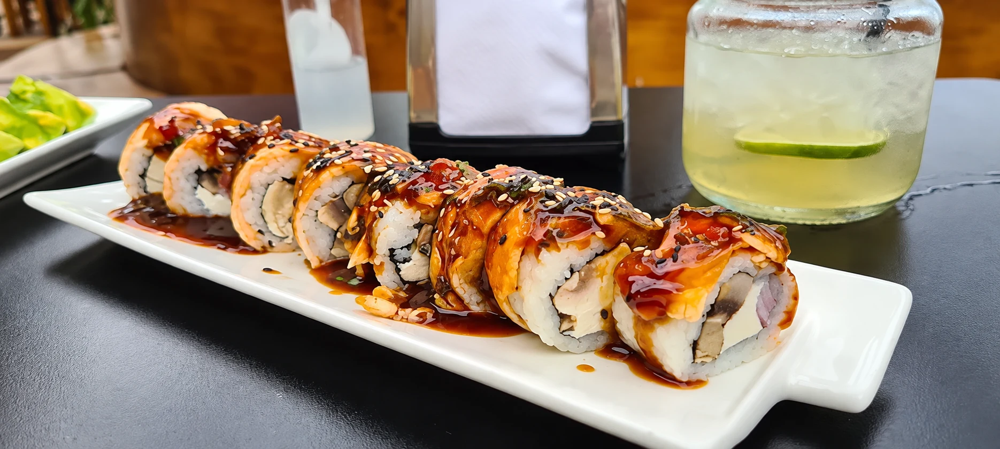
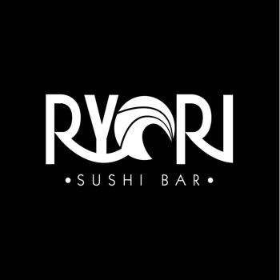
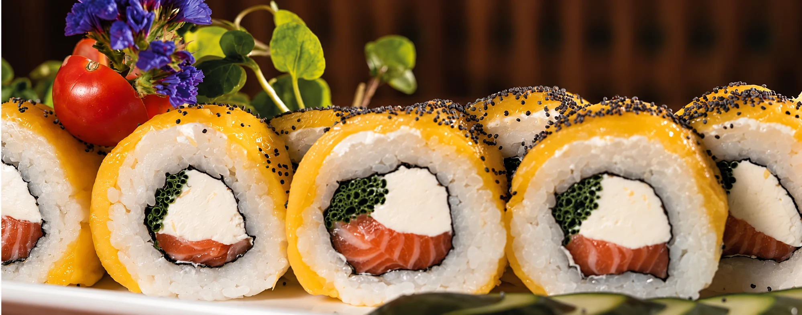
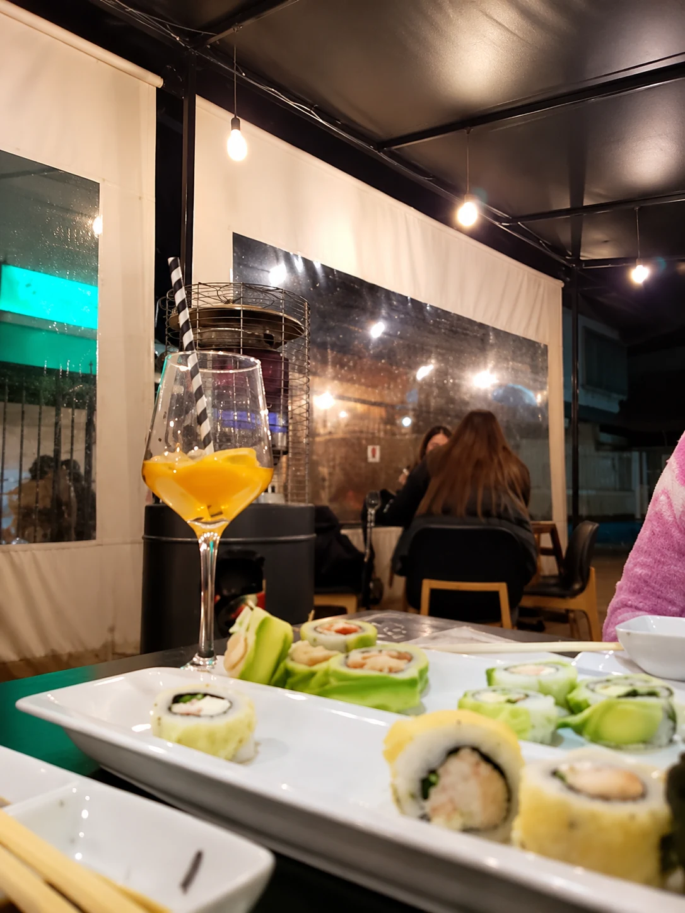

01 / SUSHI
Rolls de la casa
Avocado, tempura, acevichados y combinaciones para volver por más.
Elegir mis rolls

UN BUEN PLAN EN LLOLLEO
Sushi, burgers y algo rico para brindar.
Ven por tu favorito. Quédate por el momento.

MÁS QUE UN ANTOJO
Una salida después del trabajo, una mesa para compartir o ese sushi que te alegra el día. En el centro de Llolleo, Ryori reúne sushi, burgers y bar en un solo lugar.
Conoce más en InstagramEL PLAN TAMBIÉN PUEDE SER EN CASA
Abre la carta, elige tus favoritos y revisa las opciones disponibles para tu pedido.
TE ESPERAMOS
En el centro de Llolleo, San Antonio.
Encuentra la ruta y ven a compartir.
Dirección publicada en nuestra carta online.
Horarios publicados en la carta. Consulta por WhatsApp para feriados o cambios.